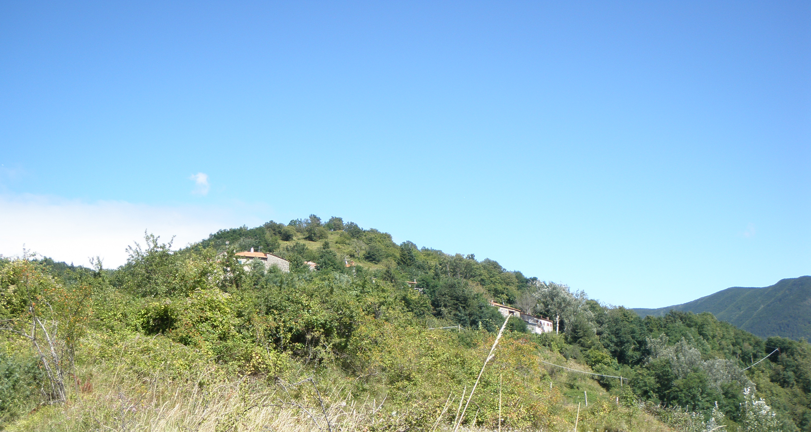

Lancisa
Lancisa o Ancisa, come Spignana costituiva una tappa della via Pistoia-Modena che raggiungeva il lago Scaffaiolo e sfruttava il passo della Calanca. Fu un comune rurale dipendente da Lizzano
La tradizione e gli storici locali hanno legato questo paese al ricordo della famosa imboscata tesa dai Galli Boi all’esercito romano di Lucio Postumio Albino presso la Selva Litana (216 a. C.). Il nome Lancisa o Ancisa sarebbe derivato dal termine latino Caesa silva, selva tagliata, riferito all’espediente usato dai Galli per sconfiggere i Romani. I Galli, infatti, secondo il racconto dello storico Tito Livio, avevano tagliato i tronchi degli alberi della Selva Litana, senza però abbatterli in modo che questi rovinassero sui Romani al loro passaggio, travolgendoli e uccidendoli.
Molti studiosi hanno preferito collocare questo episodio in Emilia.
Cappella di Santa Maria.
Lancisa -Dizionario geografico fisico storico della Toscana di Emamuele Repetti (1841)